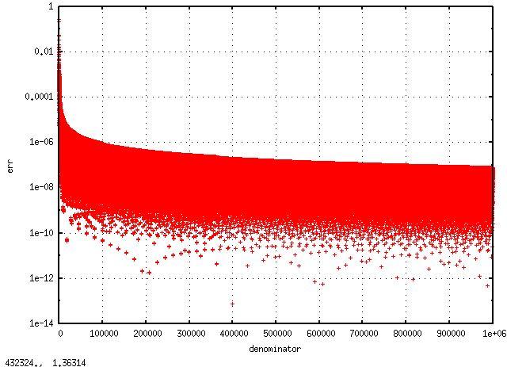

7. 円周率の分数表現を探す¶
355/113が非常によい円周率の近似値であることはよく知られている。電卓を使って計算してやれば
\[355/113 = 3.14159292035\]
と驚くべき精度があることがわかる。しかもこの数字は分母から順に1,1,3,3,5,5と、最も小さな奇数から順に二個ずつ並んでいるのが憎らしい。これだけ綺麗な分数は見つかりそうもないが、他の分数表現を探してみようじゃないか。
7.1. 評価基準¶
単純に円周率に近い値が欲しければ例えば\(31415/10000\)のように\(10^n\)で割ってやればよいだけなのでつまらない。355/113が人を感動させるひとつの理由は分子、分母それぞれ3桁しかないのにそれを大きく超える精度で\(\pi\)と一致するからである。そこで、次の評価基準を採用する。
\[\text{err} = \frac{|\pi-m/n|}{({\rm digit}(m)+{\rm digit}(n))/2}\]
ただし、digit関数は引数の桁を返す関数である。
7.2. 結果¶
次のプログラムを用いて探索した。
円周率の分数表現探索コード¶
#include <iostream>
#include <math.h>
#include <stdio.h>
unsigned int digit(unsigned int n)
{
return (n==0 ? 1 : (int)log10(n)+1);
}
int gcd( int m, int n )
{
while(m!=n)
{
if (m > n) m = m - n;
else n = n - m;
}
return m;
}
int main()
{
double min_err = 1e9;
unsigned int ans_m, ans_n;
FILE *fp = fopen("err.txt", "w");
for(unsigned int n=1; n<1000000; n++)
{
unsigned int m = round(n * M_PI);
double err = fabs((double)m/(double)n-M_PI);
double dig = (digit(n) + digit(m))/2.;
double err2 = err / dig;
if(err2 < min_err)
{
min_err = err2;
ans_m = m;
ans_n = n;
//約分
int GCD = gcd(ans_m,ans_n);
ans_m /= GCD;
ans_n /= GCD;
}
fprintf(fp, "%d %e\n",n, err2);
}
fclose(fp);
std::cout << ans_m << "/" << ans_n;
return 0;
}
分子が1000000未満で探索すると、
\[3126535/995207 = 3.14159265359\]
と実に11桁に渡って円周率と一致している。それほど感動はないかもしれないが。
評価値に規則性はあるだろうか。横軸に分母の値、縦軸に評価値をとってプロットしてみる。
お、規則性ありますな。なんでだ。誰か教えてくり。
7.3. 他の数学定数¶
例えばネイピア数。分母が1000未満で探索すれば
\[1457/536 = 2.71828358209\]
となる。分母1000000未満で探索すれば
\[1084483/398959 = 2.71828182846\]
となる。評価値をプロットしてやれば
